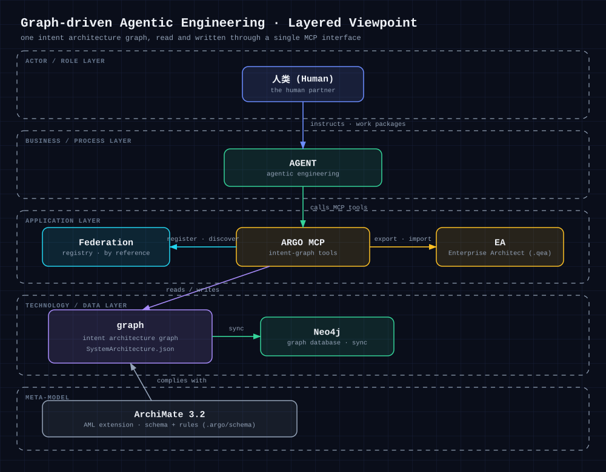

01What is this?
This project turns an intent architecture graph — an ArchiMate 3.2 model — into the single source of truth for agentic engineering. Every piece of work starts from an element in the graph — a Work Package, a Skill, a Rule, or a Viewpoint — and every code change is traced back to it.
02What is it for?
ArchGraph exists to remove the recurring pain of agentic engineering. On the left are the
problems that usually stall multi-agent projects; on the right is what the intent architecture graph turns
them into.
Cross-platform orchestration
One intent graph drives GitHub Copilot, opencode, and Cursor with the same rules, skills, and harness.
Long-term memory
The graph is durable, queryable memory — a GraphRAG lifecycle plus Neo4j sync keeps knowledge across sessions.
Minimal context assembly
Arm before acting: materialize only the Skills and Rules the current Work Package needs.
Single source of truth
Every change maps to a graph element, so design, docs, and code never drift apart.
Acceptance-test-driven delivery
GIVEN-WHEN-THEN cases verify each element from the outside, executable with node --test.
Traceability
Every commit’s id and file paths are registered back into the graph element.
03Architecture
The global architecture (Layered Viewpoint) shows how the human, the coding agent, ARGO MCP, the intent architecture graph, ArchiMate 3.2, Enterprise Architect, and Neo4j relate in graph-driven agentic engineering.

Editable source: docs/diagrams/global-architecture.excalidraw
04Core principles
Arm before acting
Before any development, pull the Work Package’s associated Skills and Rules and materialize them as SKILL.md and *.instructions.md.
Find the element first
Every repository change maps to an architecture element. If none exists, create one inside a sensible View and Viewpoint.
Acceptance tests first
Check the affected acceptance cases before changing anything. Tests verify elements from the outside, never their internals.
Commit traceability
After each change, commit and register the commit id plus file paths back into the graph element.
05Repository map
design/KG/SystemArchitecture.json # canonical intent architecture graph (ArchiMate 3.2) .github/copilot-instructions.md # global agent rules .github/kglibrary.instructions.md # global rule for KGlibrary info format .github/skills/<name>/SKILL.md # skills materialized from the graph .argo/ # ARGO harness: MCP server, schema, validators, Graph RAG, Neo4j sync docs/diagrams/ # architecture diagram source (.excalidraw) + rendered .svg KGlibrary/ # reference project knowledge library index.html # GitHub Pages home site (this page) tests/ # executable acceptance tests
06How to use
This is an agentic engineering framework driven by a knowledge graph whose schema complies with ArchiMate 3.2. To adopt it as the building framework for another project, copy the following into that project:
.argo/
The ARGO harness: MCP server, ArchiMate 3.2 schema, validators, semantic (Graph RAG) lifecycle, and Neo4j sync.
One agent-host config
.github/ for GitHub Copilot / VS Code, .opencode/ for opencode, or .cursor/ for Cursor — global rules, skills, and ARGO MCP wiring.
The .feap model
The Enterprise Architect ArchiMate 3.2 model used to author the knowledge graph (the feap tool).
node .argo/scripts/ensureArgoHarnessEnvironment.js
07Reference Library · KGlibrary
Projects accumulated in the KGlibrary reference library, surfacing knowledge-graph-driven engineering examples.
XKG-TEST
a test repo which created a online mindmapping draft panel
08Insights
Industry insight: how knowledge graphs drive agent engineering — GraphRAG, agent memory and portable skills, surveyed with the GPT-Researcher multi-agent method.
知识图谱驱动的 Agent 构建 · 业界洞察
GraphRAG、Agent 记忆与可移植技能的业界洞察报告，附实证数据与引用来源。